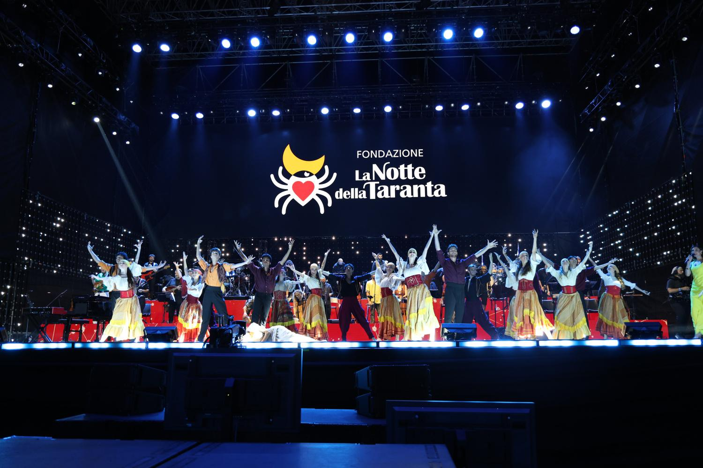

Musica & Folklore
La Notte della Taranta
Il più grande festival di musica popolare d'Europa, dedicato alla pizzica salentina. Un itinerario estivo che attraversa la Grecia Salentina e culmina nel leggendario Concertone finale di Melpignano sotto le stelle.
Agosto · Melpignano (LE)